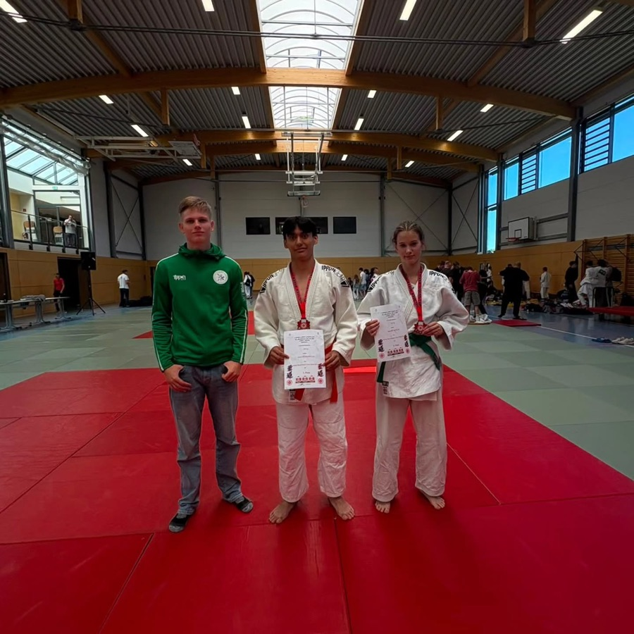
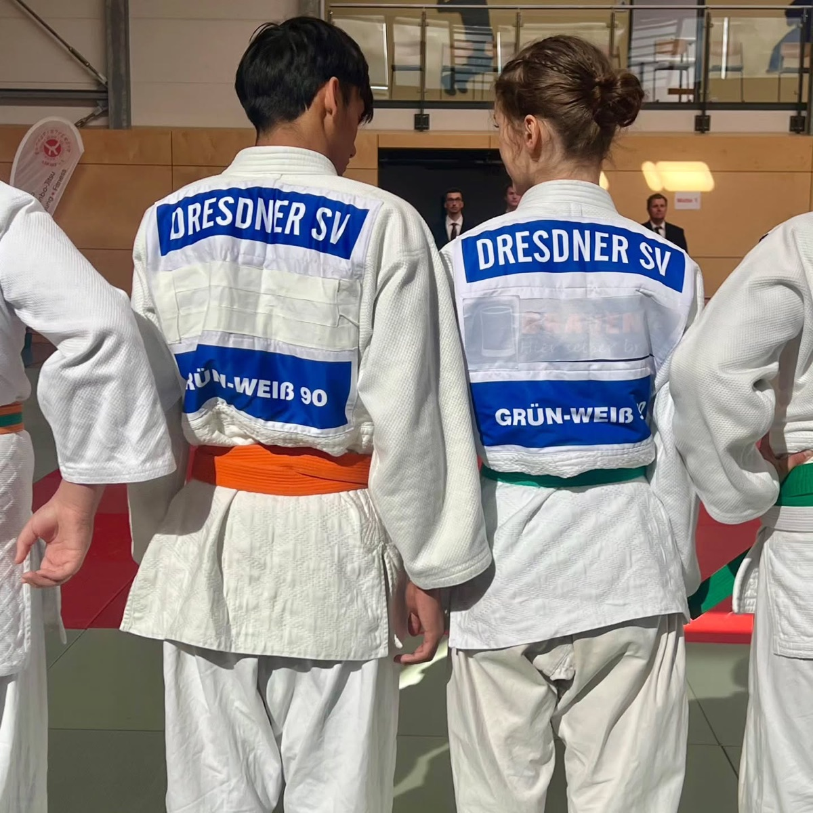
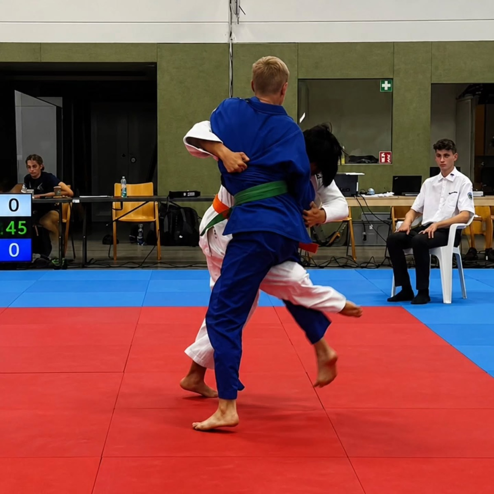
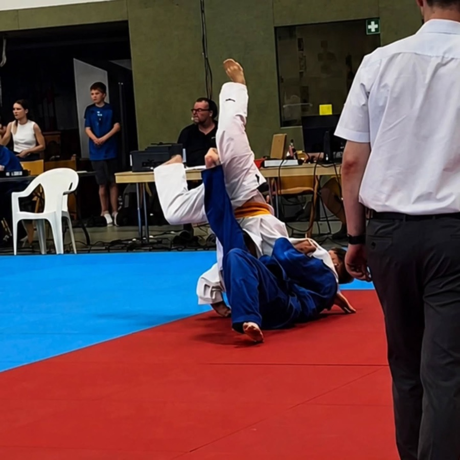
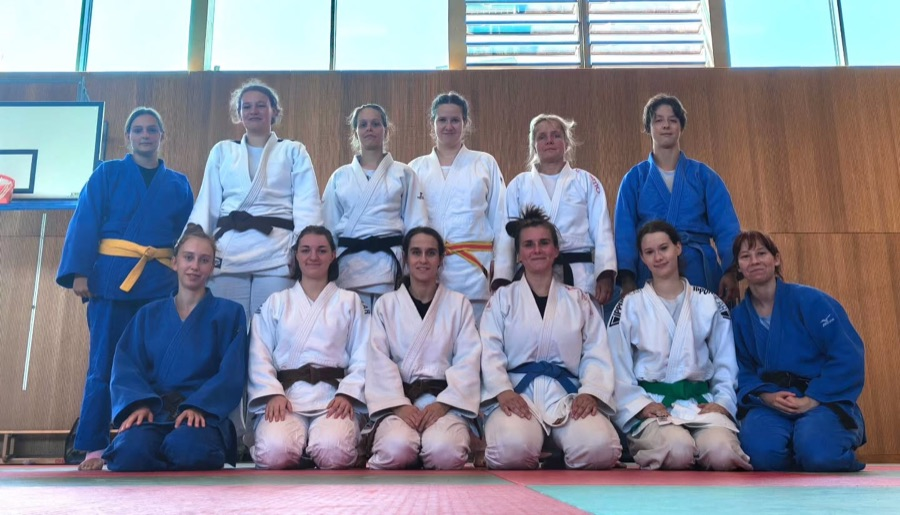
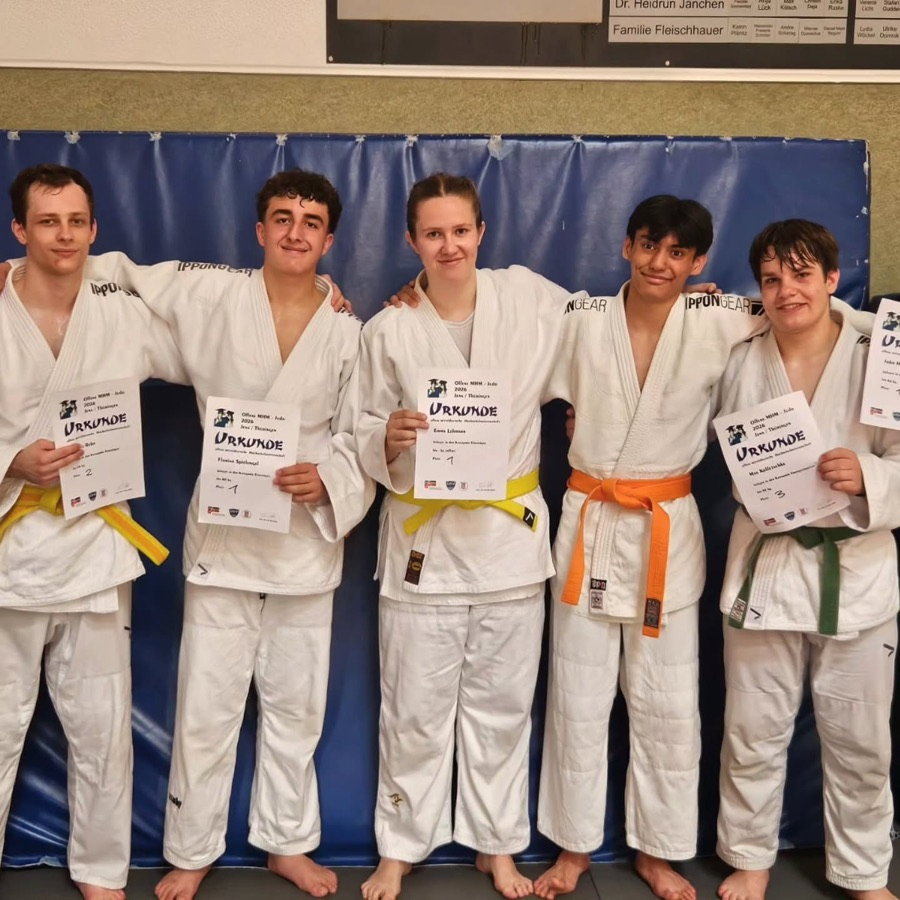
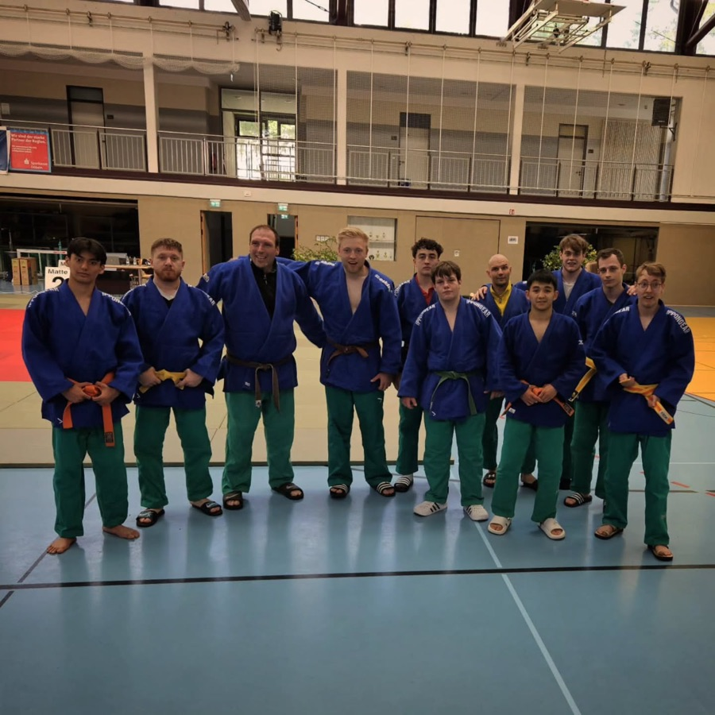
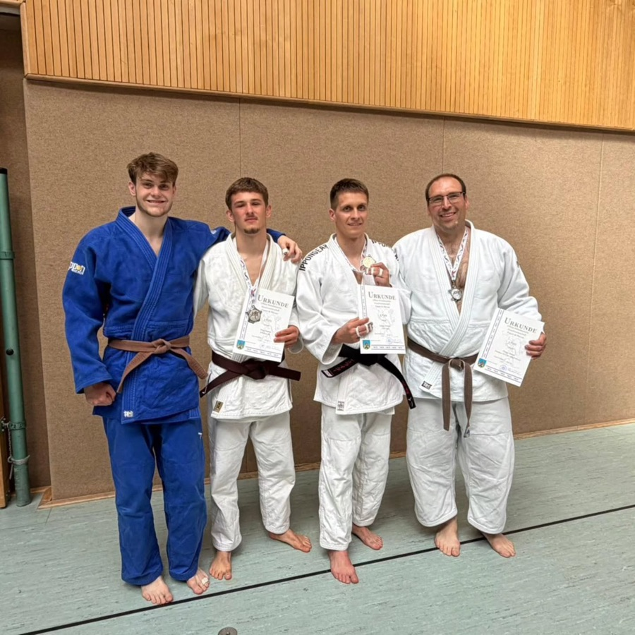

Zwei Medaillen in Adorf
Beim Goldenen Anker Jugend Cup haben sich beide Starter mit starken Kämpfen eine Medaille geholt.
Fallen lernen, aufstehen, weitermachen. Für Kinder, Jugendliche und Erwachsene, vom ersten Training bis zur Landesliga.
Zweimal pro Woche auf der Matte. Komm einfach zu deiner Gruppe, die ersten vier Trainings sind kostenlos.
Bequeme Sportsachen, etwas zu trinken, fertig. Trainiert wird barfuß.
Jugend und Erwachsene trainieren gemeinsam freitags von 19:00 bis 21:00 Uhr.
Jeder fängt mit dem weißen Gürtel an. Mit jeder Prüfung kommt eine neue Farbe dazu, und du merkst, wie viel du schon kannst.
Judo heißt „sanfter Weg“. Gegründet von Kanō Jigorō, beruht es auf zwei Grundsätzen, die wir auf und neben der Matte ernst nehmen.
Bestmöglicher Einsatz von Körper und Geist. Technik schlägt Kraft: Wer die Bewegung des Gegenübers nutzt, braucht wenig Aufwand.
Gegenseitiges Helfen zum beiderseitigen Wohl. Ohne Trainingspartner kein Fortschritt. Deshalb achten wir aufeinander.

Ehrenamtlich organisiert, deshalb günstig. Die Aufnahmegebühr zahlst du erst, wenn du nach dem Probetraining bleiben möchtest.
| Aufnahmegebühr (nach dem Probetraining) | 3,00 € |
| Budopass | 10,00 € |
| Jahressichtmarke | 18,00 € |
| Kyu-Marke | 12,00 € |
| Kyu-Prüfungsgebühr | 1,50 € |
| Zwischengürtel (gestreift) | 1,50 € |
Turnhalle der 113. Grundschule
Georg-Nerlich-Straße 1
01307 Dresden-Johannstadt


Beim Goldenen Anker Jugend Cup haben sich beide Starter mit starken Kämpfen eine Medaille geholt.

Fünf unserer Judokas waren am Start, einer hat sich mit starken Kämpfen Platz 3 gesichert.

Zusammen mit dem JV Dresden: Boden, Stand und Randori, für jede war etwas dabei.

Bei den Mitteldeutschen Hochschulmeisterschaften: dreimal Gold, einmal Silber, einmal Bronze.

Am finalen Kampftag in Döbeln sicherte sich unsere Männermannschaft einen starken 6. Platz.

Mitteldeutsche Meisterschaften in Schmölln: zweimal Silber, einmal Bronze und drei Qualifikationen für die Deutsche Meisterschaft.
Du kannst einfach zu einer Trainingszeit in die Halle kommen. Bei Fragen zur Anmeldung oder zum Probetraining schreib uns.